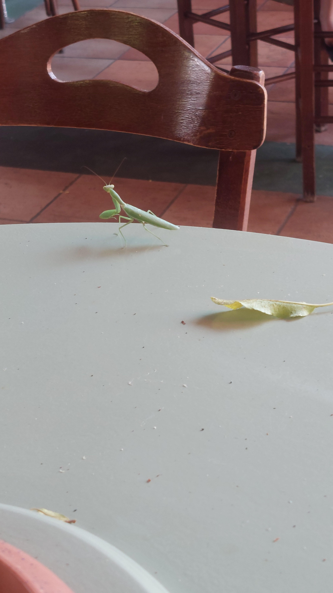
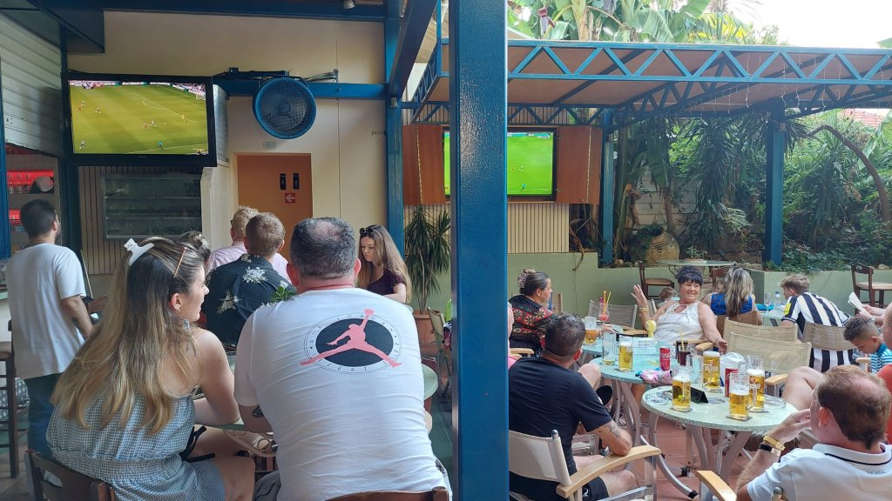
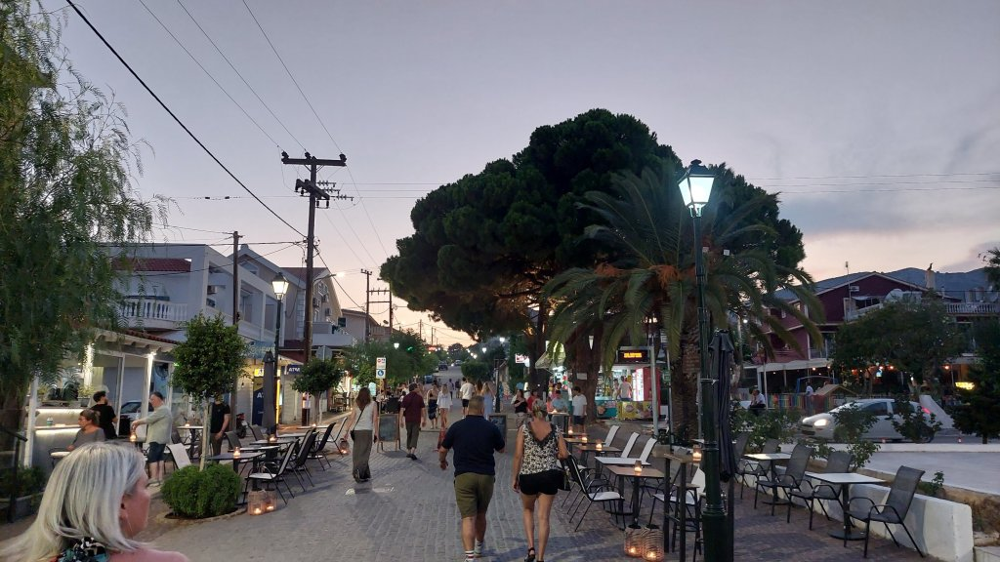
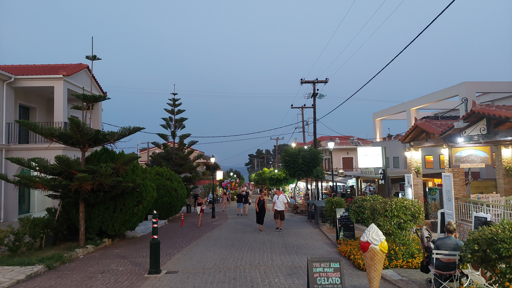
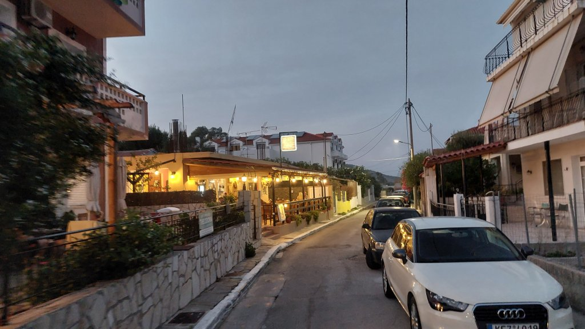
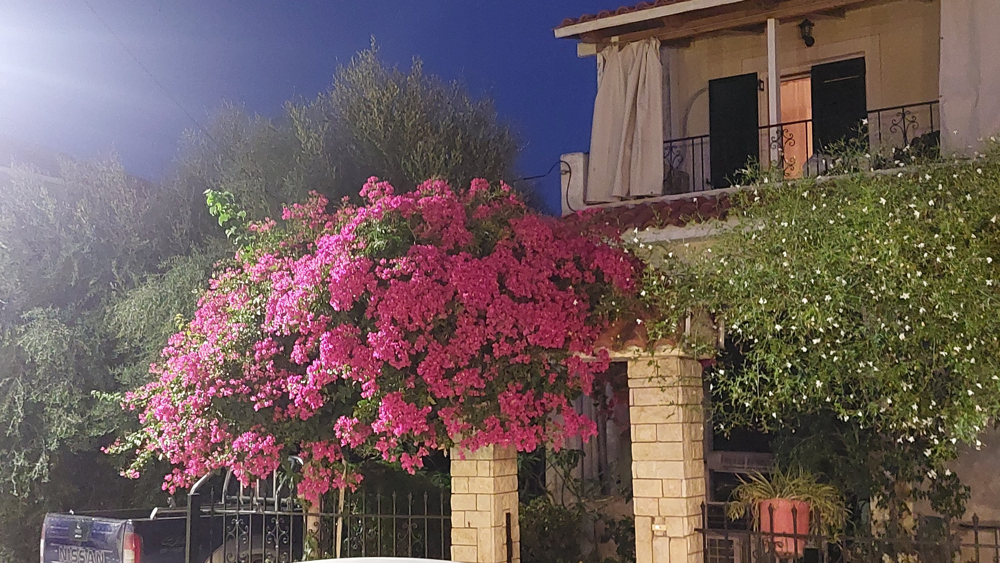
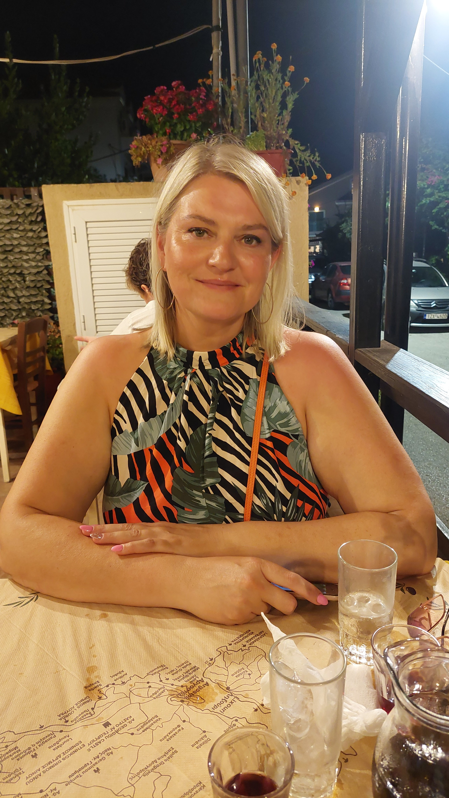
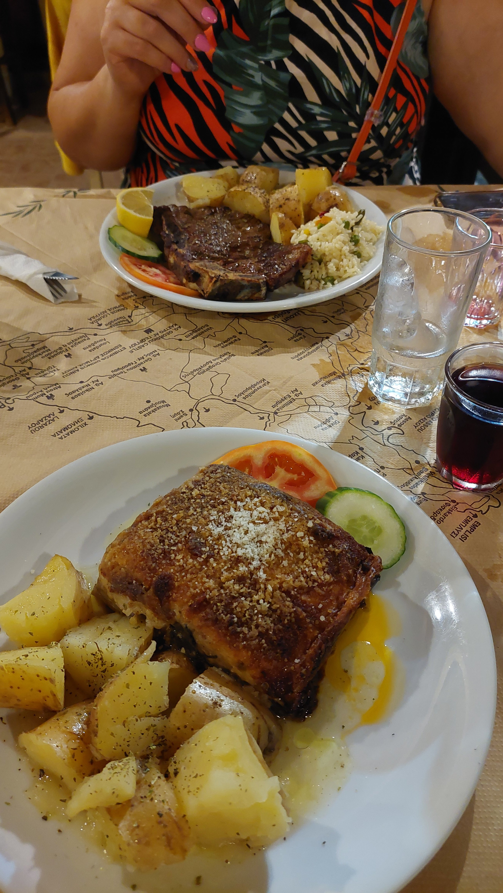
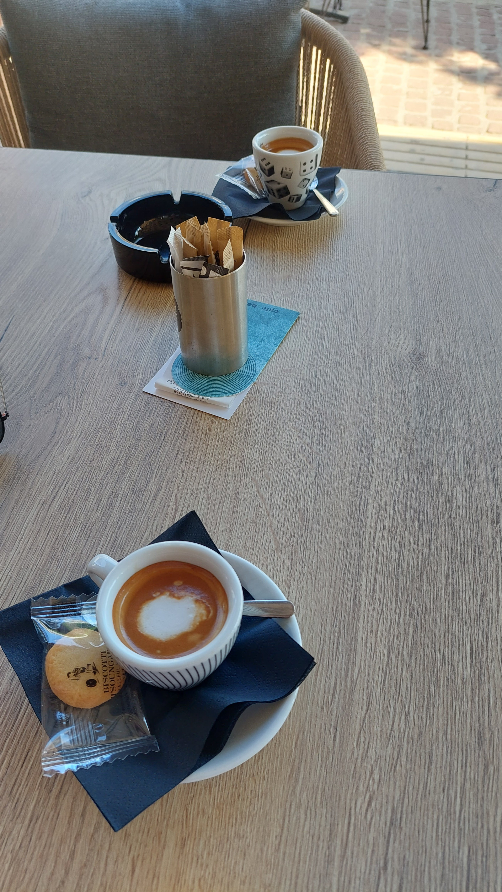

Kefalonia - Day 4
Another very lazy start, lie in until 10am, Mel went for breakfast, I couldn’t face it after that pizza. Walk into town about 10:30 for a double espresso each and headed to the beach. Brought an umbrella for 14 euros to save purchasing the ever increasing in price cost of the sunbeds (this should save about 150 euros over the holiday). Lovely spot down on the beach just by the side of Milos beach bar. Swam, read, relaxed. Milos for lunch, Mel ordered Tropical salad - she didn’t like it and was covered in mayonnaise and had crap chicken Gyros meat in it. I helped her finish it haha. I had Milos special sandwich - olives, feta and tomatoes….just ok. Diet coke for me and a water for Mel. More swimming in the afternoon and up to the sports bar for a day of football action! Mel loves it. Just 2 games today, 3 Mythos for me and vodka coke for our Mel who vanished at half time to go to the room to get ready. Quick spruce up and out again for the Newcastle Man city game KO 18:30 here. Watched that with a gallon more Mythos and went to a highly rated authentic restaurant about 500m up the big steep hill. Makis Grillhouse - looked lovely from the outside and was very good. Lovely attentive staff and a solid menu. We shared a grilled cheese and tomato starter, I had my first Moussaka of the holiday which was lovely and Mel had a steak which was a little lacking in the meat department. Shared a half litre of house red and Mel had a complimentary fruit dessert of banana, apple and honey….all in was about 33 euros (about 28 quid) which we thought was very respectable.








